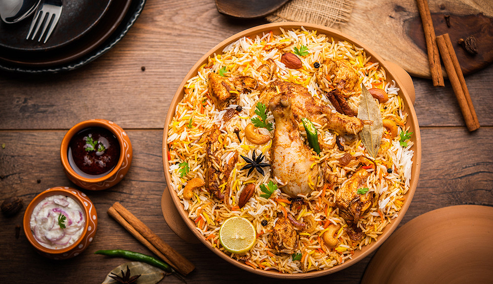
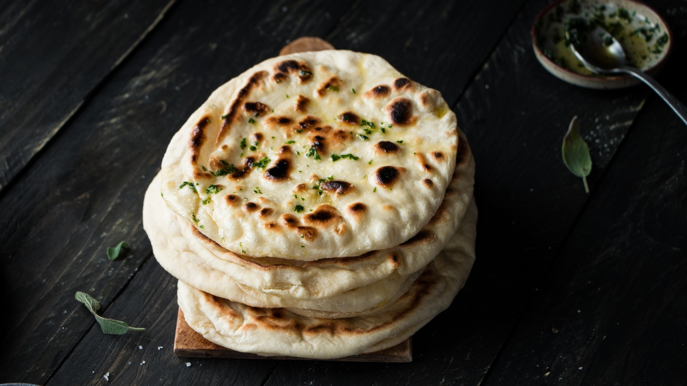
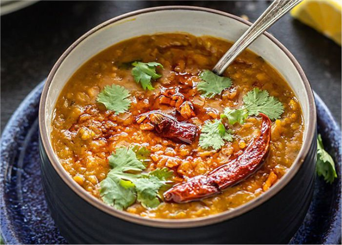

Recettes d'Inde
Découvrez les délices de la cuisine indienne avec nos recettes traditionnelles et modernes.
Butter Chicken

Description : Le Butter Chicken, ou poulet au beurre, est un plat crémeux et légèrement épicé, composé de morceaux de poulet marinés et mijotés dans une sauce tomate onctueuse avec du beurre et des épices. Ce plat est généralement servi avec du naan ou du riz basmati.
Ingrédients :
- 500 g de poulet, coupé en morceaux
- 200 ml de yaourt nature
- 1 c. à soupe de pâte de gingembre et ail
- 2 c. à soupe de garam masala
- 1 c. à soupe de poudre de piment rouge
- 400 ml de purée de tomate
- 100 ml de crème
- 50 g de beurre
- Coriandre fraîche pour garnir
Instructions :
- Marinade : Mélanger le poulet avec le yaourt, la pâte de gingembre et ail, le garam masala et la poudre de piment. Laisser mariner pendant au moins 1 heure.
- Cuisson du poulet : Dans une poêle, faire revenir le poulet mariné jusqu'à ce qu'il soit doré. Réserver.
- Préparer la sauce : Dans la même poêle, ajouter le beurre et la purée de tomate, puis laisser mijoter pendant 10 minutes.
- Ajouter le poulet et la crème : Incorporer le poulet dans la sauce, ajouter la crème et laisser mijoter jusqu'à ce que le tout soit bien mélangé.
- Servir : Garnir de coriandre fraîche et servir avec du naan ou du riz.
Biryani

Description : Le Biryani est un plat de riz parfumé aux épices, souvent cuisiné avec du poulet, de l'agneau ou des légumes, et accompagné de safran et de coriandre. Ce plat est un incontournable de la cuisine indienne, apprécié pour ses arômes complexes.
Ingrédients :
- 300 g de riz basmati
- 500 g de poulet ou d'agneau
- 2 oignons, émincés
- 2 c. à soupe de pâte de gingembre et ail
- 1 c. à soupe de garam masala
- 1 bâton de cannelle
- 4 gousses de cardamome
- Safran, coriandre et menthe pour garnir
Instructions :
- Cuire le riz : Faire cuire le riz basmati avec le safran et réserver.
- Préparer le poulet : Faire revenir le poulet avec la pâte de gingembre et ail, les épices et les oignons jusqu'à ce qu'il soit cuit.
- Assembler le Biryani : Alterner des couches de riz et de poulet dans une cocotte, garnir de coriandre et de menthe, puis couvrir et laisser mijoter.
- Servir : Servir chaud avec du yaourt nature.
Naan

Description : Le Naan est un pain plat traditionnel cuit dans un four en terre cuite appelé *tandoor*. Il est moelleux et parfait pour accompagner des plats indiens en sauce comme le Butter Chicken ou le Curry.
Ingrédients :
- 250 g de farine
- 1 c. à café de levure
- 1 c. à soupe de sucre
- 100 ml de yaourt
- 50 ml de lait
- Ghee ou beurre pour badigeonner
Instructions :
- Préparer la pâte : Mélanger la farine, la levure, le sucre, le yaourt et le lait pour obtenir une pâte souple. Laisser lever 1 heure.
- Former les naans : Diviser la pâte en petites boules, les aplatir pour former des galettes.
- Cuisson : Faire cuire les naans dans une poêle chaude ou au four, puis badigeonner de ghee.
- Servir : Servir chaud en accompagnement.
Dal Tadka

Description : Le Dal Tadka est un plat à base de lentilles jaunes cuites avec des épices, souvent relevé avec une touche de piment. Ce plat végétarien est servi avec du riz ou du naan pour un repas réconfortant et savoureux.
Ingrédients :
- 200 g de lentilles jaunes
- 1 oignon, haché
- 2 tomates, coupées en dés
- 2 c. à soupe de ghee
- 1 c. à café de cumin
- 1 c. à café de poudre de curcuma
- 2 piments rouges secs
- Feuilles de coriandre pour garnir
Instructions :
- Cuire les lentilles : Faire cuire les lentilles dans de l'eau jusqu'à ce qu'elles soient tendres.
- Préparer le tadka : Dans une poêle, chauffer le ghee, ajouter le cumin, le curcuma, les piments rouges et les oignons. Faire revenir jusqu'à ce que les oignons soient dorés.
- Assembler : Incorporer les tomates et les lentilles dans le tadka, laisser mijoter quelques minutes.
- Servir : Garnir de coriandre fraîche et servir avec du riz ou du naan.